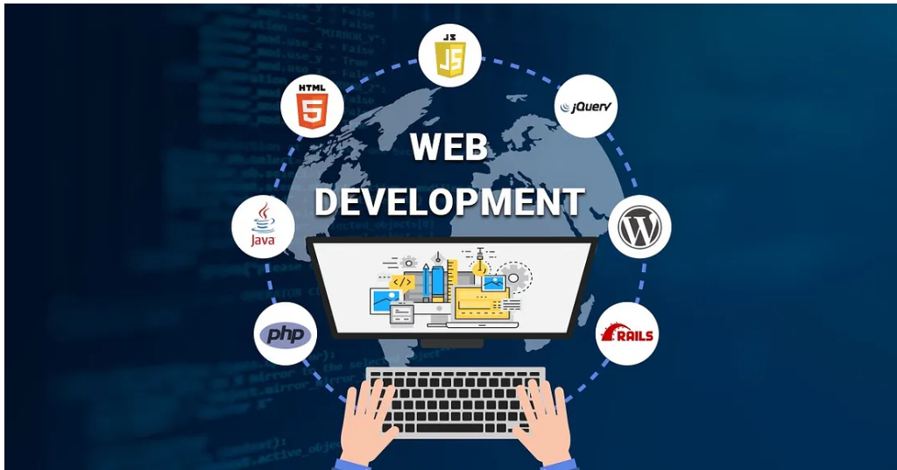
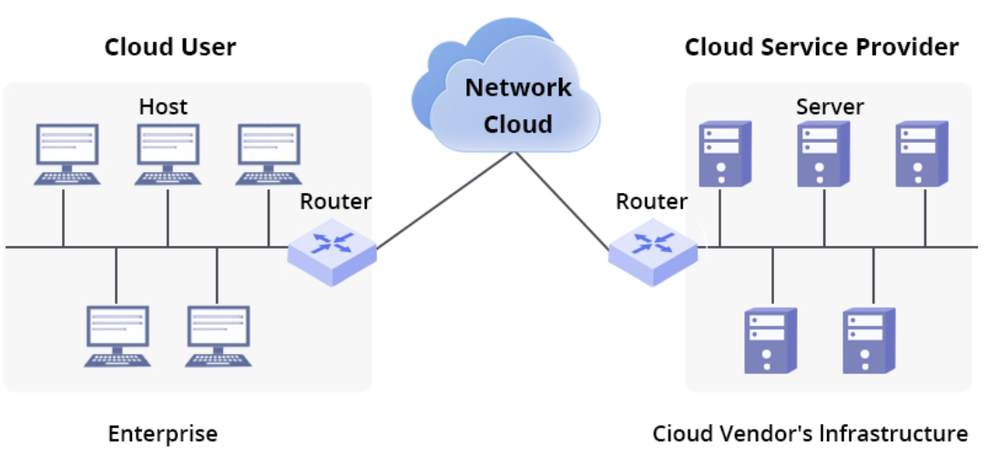

Master the most in-demand digital skills including cybersecurity, web development, data analysis, design, networking, and cloud computing.
Our Cyber Security course is designed to help learners understand how to protect
digital systems, networks, and sensitive data from cyber threats. In this course,
students will learn the fundamentals of information security, ethical hacking,
network protection, and threat detection. Through guided lessons and practical
examples, learners will explore how cyber attacks happen and how security professionals
prevent them.
To make this course unique, we provide **hands-on labs, real-world security scenarios,
interactive exercises, and practical projects that allow students to apply what they learn.
By the end of the course, learners will gain the skills and confidence needed to understand
modern cybersecurity challenges and start building a career in the field.

Our Web Development course is designed to teach learners how to build modern, responsive,
and interactive websites from scratch. In this course, students will learn the core technologies
of the web, including HTML, CSS, and JavaScript, and understand how websites are structured, styled,
and made dynamic. The course guides learners step-by-step through creating web pages and developing
functional web applications.
To make this course unique, we provide hands-on coding projects, real website building exercises,
interactive practice tasks, and portfolio-based assignments**. Students will work on real-world examples
and create their own websites, helping them gain practical experience and prepare for careers in web development.
Our Data Analysis course teaches learners how to collect, process, and interpret data to make informed decisions.
In this course, students will learn the fundamentals of data analysis, including data cleaning, visualization,
and basic statistical techniques. Learners will work with common tools used in the industry such as Excel, Python,
and data visualization software to understand patterns and trends in data.
To make this course unique, we provide hands-on datasets, real-world case studies, interactive exercises, and practical
projects that allow students to analyze real data and present meaningful insights. By the end of the course, learners will
develop the skills needed to turn raw data into valuable information for businesses and organizations.

Our Cloud Computing course teaches learners how modern applications and services run on cloud platforms. In this course, students will explore
the basics of cloud technology, including cloud storage, virtualization, infrastructure, and popular platforms such as AWS, Microsoft Azure,
and Google Cloud**. Learners will understand how businesses use cloud services to store data, host applications, and scale their systems.
To make this course unique, we provide hands-on cloud labs, real-world deployment projects, interactive demonstrations, and practical exercises
using cloud platforms**. By the end of the course, learners will gain the knowledge needed to understand and work with modern cloud technologies.
Complete all courses to unlock your certificate and showcase your skills to employers.
Your certificate proves that you have successfully completed the full learning path and are ready to take on real IT challenges.